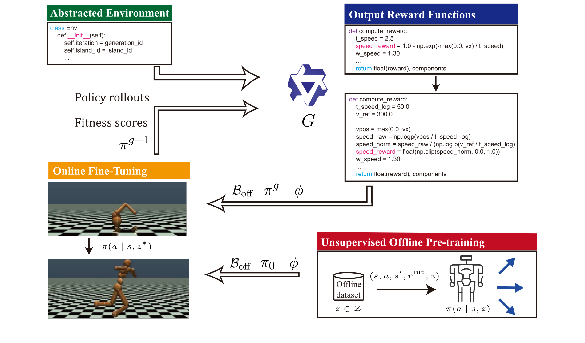
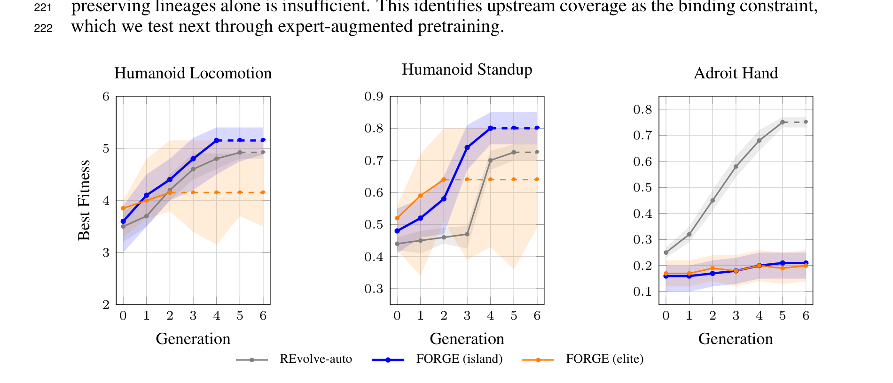
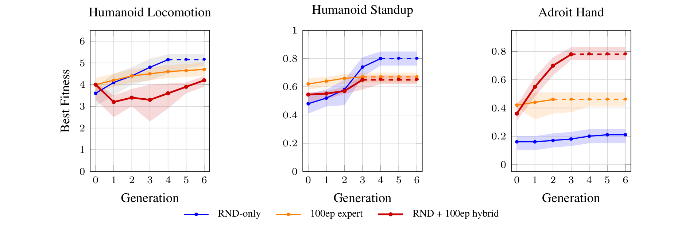
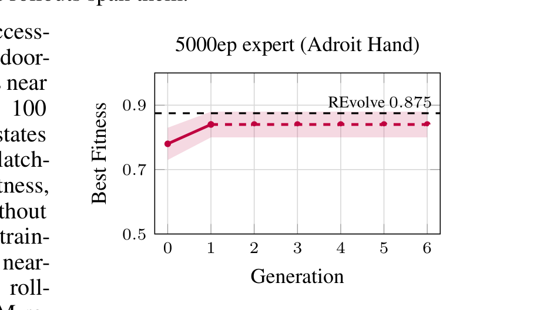
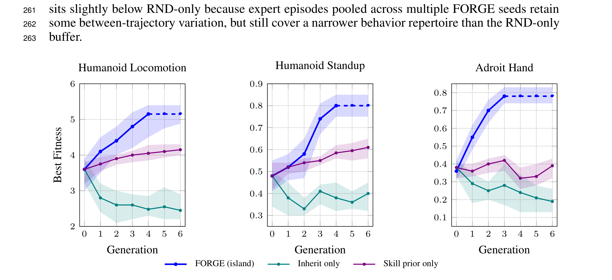

Abstract
Designing effective reward functions is a persistent bottleneck in reinforcement learning. Recent work uses large language models to generate task-specific rewards and evolve them against a task-level fitness function. But state-of-the-art LLM-driven reward search trains and discards a fresh policy for each reward candidate, skipping the upstream–downstream factorization of modern RL: policy initialization is incidental, and reward ordering is ignored.
We hypothesize that restoring this factorization — pretraining a task-agnostic skill prior once, then letting the ordered reward trajectory itself carry the specification — yields stronger policies at a fraction of the compute. We introduce FORGE (Fine-tuning Over Reward Generations through Evolution), which pretrains a skill prior via temporal-distance successor features and then lets an LLM evolve task rewards while each policy adapts through closed-form skill projection.
The FORGE pipeline
FORGE couples a one-time upstream skill prior with downstream reward–policy co-evolution. Each generation, an LLM reward designer $G$ proposes an executable reward from a natural-language task description, the simulator's observation and action variables, policy rollouts, and fitness scores. FORGE infers a skill vector in closed form, $z^\star=(\Phi^\top\Phi)^{-1}\Phi^\top r$, and fine-tunes a child policy inherited from its parent rather than restarting from scratch.

Why it matters
LLM-based methods recast reward design as program search: an LLM proposes executable reward functions, each is used to train a policy, and the resulting behavior is scored by a fitness function. The limitation is that this fitness remains static while the search is sequential — every candidate is evaluated from a fresh policy initialization and the checkpoint is discarded after scoring. The score therefore measures standalone reward quality, asking whether a reward trains a good policy in isolation rather than whether it advances the policy state produced by previous rewards.
FORGE redefines reward fitness around trajectory-relative progress. Instead of searching for a single best standalone reward, it optimizes an ordered reward trajectory $(R^0, R^1, \ldots)$ where each generation specializes an inherited policy. This makes the starting policy and its representation load-bearing: downstream reward evolution should specialize reusable capabilities, not rediscover low-level embodiment behavior.
A reusable prior guides generational policy evolution
A task-agnostic skill prior provides reusable behavioral structure, letting each generation inherit useful capabilities instead of relearning low-level skills. Pretraining becomes a one-time cost amortized across downstream tasks on the same embodiment.
Expert demos restore missing success capabilities
When unsupervised pretraining never reaches success states, a one-time set of expert demonstrations supplies the missing capability — intervening at the capability level rather than relying on signal-level feedback every generation.
Trajectory-level fitness captures cumulative improvement
Rather than treating each reward as an independent RL problem, FORGE judges each generation by whether it advances the cumulative capabilities inherited from its predecessors along the reward–policy trajectory.
Method
Task-agnostic skill prior
FORGE begins with a one-time pretraining phase producing a skill prior $(\phi,\pi_0,\mathcal{B}_{\text{off}})$ shared across downstream tasks on the same embodiment. The feature map $\phi:\mathcal{S}\to\mathbb{R}^d$ is trained with HILP temporal-distance learning to capture reward-agnostic state-space geometry, while $\pi_0(a\mid s,z)$ and a successor-feature network $\psi^\pi$ are trained on the same offline buffer. For any reward linear in the learned feature space, $R_z(s)=\phi(s)^\top z$, the action-value estimate factorizes as $Q^\pi(s,a;z)=\psi^\pi(s,a;z)^\top z$.
Closed-form reward-to-skill adaptation
Before fine-tuning a child policy, FORGE maps each LLM-generated reward into the pretrained skill space. Given a reward candidate $R$, it relabels transitions from the offline buffer to obtain reward values $r_i=R(s_i,a_i)$, and infers the skill direction by solving the least-squares projection
$z^\star=\arg\min_z \lVert \Phi z - r\rVert_2^2 = (\Phi^\top\Phi)^{-1}\Phi^\top r.$
This inferred vector $z^\star$ initializes the skill input of the child policy before online fine-tuning, giving the inherited policy a reward-directed initialization in the pretrained skill space — with any residual approximation error corrected by subsequent online fine-tuning under $R$.
Cross-generation policy inheritance
FORGE evaluates reward candidates through inherited policies rather than freshly initialized ones. Each child reward is paired with a parent checkpoint, warmstarted with the reward-specific skill vector $z^\star$, then fine-tuned under that reward. Because fitness is computed from a parent checkpoint, it is lineage-dependent: it reflects how a reward improves the inherited policy state, not how it performs under fresh training. FORGE (island) follows REvolve's island-based parent selection; FORGE (elite) follows Eureka's single-population design.
Results
FORGE is evaluated on three MuJoCo environments — Humanoid Locomotion, Humanoid Standup, and Adroit Hand — chosen because they differ in how much unsupervised pretraining covers downstream success states. The reward designer is Qwen3-Coder (480B-A35B-Instruct).
Compute-efficient reward search

When expert injection helps — and when it hurts


Both the skill prior and inheritance are required

No single best reward matches the co-evolved peak
| Configuration | Init | Compute | Locomotion | Standup | Adroit Hand |
|---|---|---|---|---|---|
| FORGE | Pretrained $\pi_0$ | 57M | 5.1 ± 0.3 | 0.80 ± 0.05 | 0.78 ± 0.05 |
| Best reward | Pretrained $\pi_0$ | 0.5M | −0.8 | −0.26 | −0.28 |
| Best reward | Pretrained $\pi_0$ | 3.5M | −0.5 | −0.20 | −0.23 |
| Best reward | Random $\theta_0$ | 5M | −0.6 | −0.18 | −0.13 |
The reward that performs best within a lineage does not generalize beyond it: under trajectory-level fitness, a reward is selected because it advances an inherited policy, not because it is the best standalone training signal.
Takeaways
FORGE reframes LLM-driven reward search around the upstream–downstream factorization of modern RL. A one-time task-agnostic skill prior is pretrained on the embodiment alone, and a downstream evolutionary loop projects each LLM-generated reward into the prior's skill space and inherits policy weights across generations. FORGE replaces from-scratch policy training on every reward candidate with closed-form skill projection followed by skill-conditioned fine-tuning — showing that ordered reward trajectories, not single best rewards, are the load-bearing object of evolutionary reward search.
Limitations: FORGE assumes a fixed embodiment whose pretrained $\phi$ covers task-relevant states; cross-embodiment transfer is out of scope. Expert injection is task-dependent — it rescues capability-limited tasks but can degrade tasks where unsupervised pretraining already supplies both capability and diversity. Run-to-run variance is higher than from-scratch evolution because LLM-reward stochasticity compounds with inherited-policy drift across generations.
BibTeX
@inproceedings{forge2026,
title = {FORGE: Fine-Tuning Over Reward Generations through Evolution},
author = {Anonymous Author(s)},
booktitle = {Advances in Neural Information Processing Systems (NeurIPS)},
year = {2026},
note = {Under review}
}